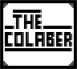

TheColaber
Hi! I'm TheColaber! You may know me from Scratch, GitHub, Discord, or YouTube... etheir way, this is my site!
I like to work on things that are useful to me. Such as many addons I have made for scratch and turbowarp.
Once in a while I make project for scratch, either dumb or my level of complexity.
You can click this text to see my lastest project on scratch.
But usseulally I'll be out in GitHub, exploring the infinte repos of the world.
I've worked on many projects which you can find in my projects section...
Anyway, enough about me, go ahead and explore my site.